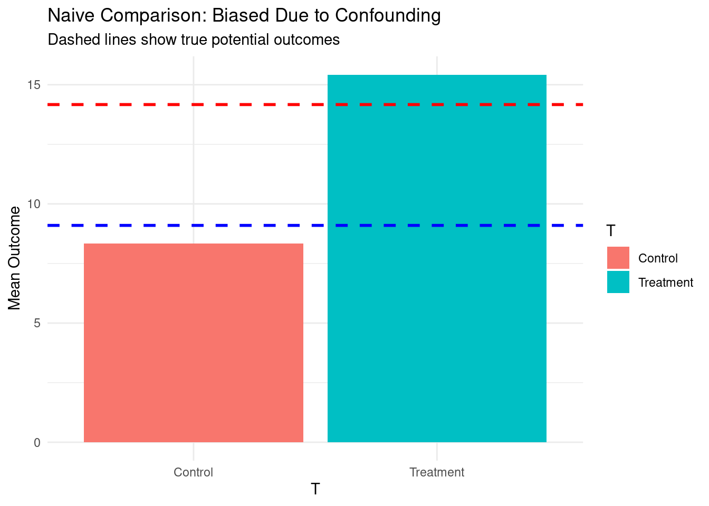
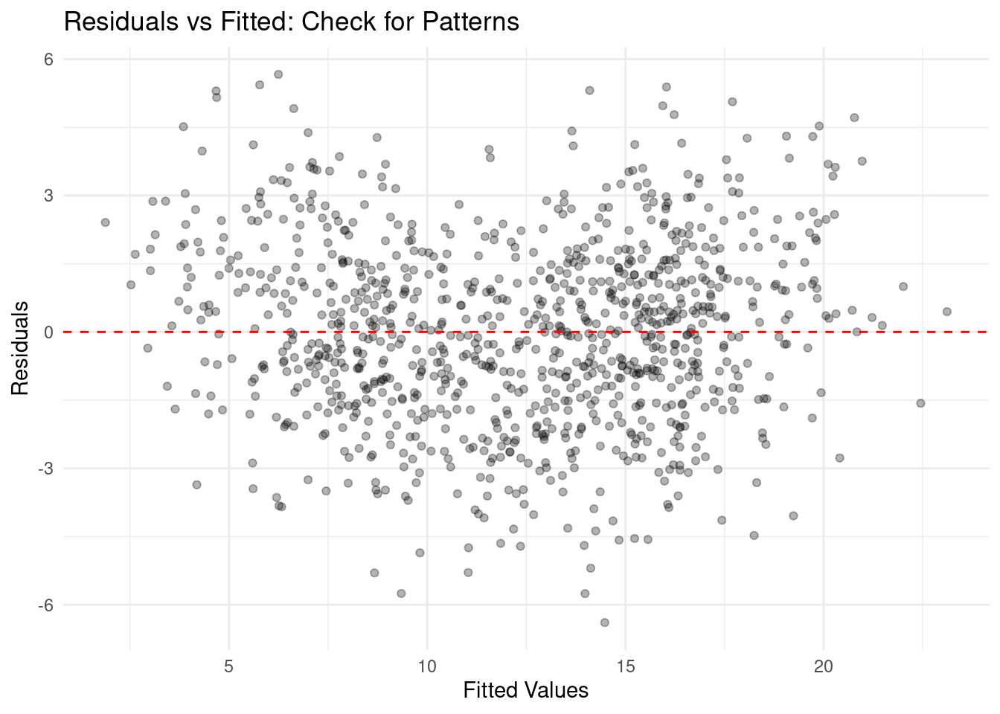
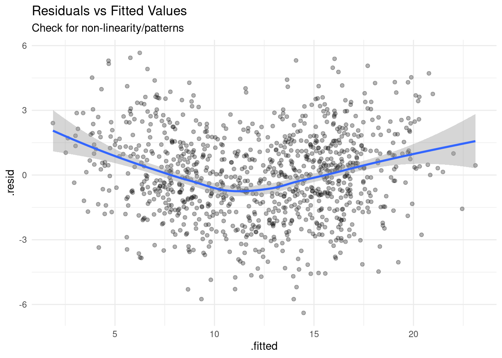
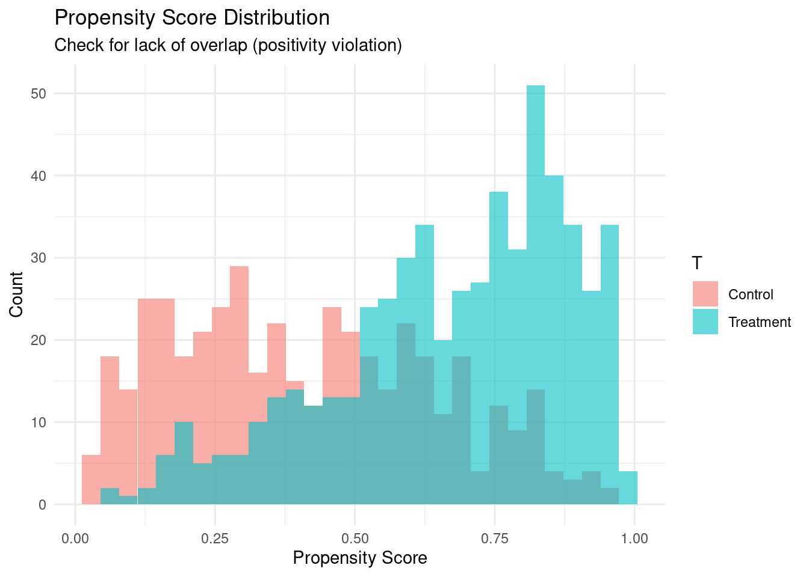
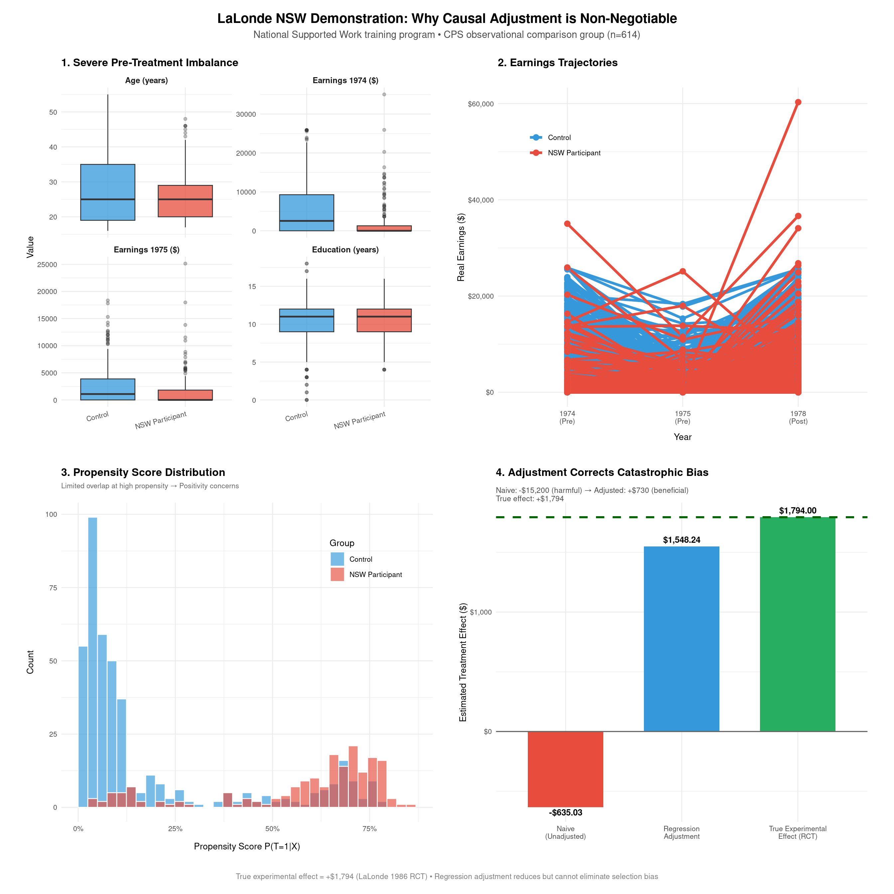

Code
packages <- c(
'tidyverse',
'ggplot2',
'MatchIt',
'cobalt',
'sandwich',
'lmtest',
'modelsummary',
'broom'
)

This section provides a comprehensive overview of regression adjustment within the potential outcomes framework, including its mathematical foundation, assumptions, and practical implementation in R.
Regression adjustment (also called covariate adjustment or outcome regression) is a fundamental technique in causal inference that estimates causal effects by controlling for confounding variables through regression modeling. It leverages the potential outcomes framework (Rubin Causal Model) to isolate the effect of a treatment/intervention from spurious associations caused by confounders.
Instead of comparing raw outcomes between treated and control groups (which may differ systematically due to confounders), regression adjustment:
For valid causal interpretation, regression adjustment requires: - Conditional Ignorability: \((Y(1), Y(0)) \perp T \mid X\)
Treatment assignment is independent of potential outcomes given observed covariates \(X\) - Positivity: \(0 < P(T=1 \mid X) < 1\) for all \(X\)
Every unit has a non-zero probability of receiving either treatment - Correct Model Specification: The functional form (e.g., linearity, interactions) must be correctly specified - No Unmeasured Confounding: All confounders must be measured and included
In the potential outcomes framework:
The Average Treatment Effect (ATE) is:
\[\text{ATE} = E[Y(1) - Y(0)]\]
With regression adjustment, we model:
\[Y_i = \beta_0 + \beta_1 T_i + \beta_2^\top X_i + \epsilon_i\]
Under conditional ignorability and correct specification:
\[\hat{\beta}_1 \xrightarrow{p} \text{ATE}\]
For non-linear models or heterogeneous effects, we compute:
\[\widehat{\text{ATE}} = \frac{1}{n}\sum_{i=1}^n \left[ \hat{E}(Y \mid T=1, X_i) - \hat{E}(Y \mid T=0, X_i) \right]\]
We’ll cover:
packages <- c(
'tidyverse',
'ggplot2',
'MatchIt',
'cobalt',
'sandwich',
'lmtest',
'modelsummary',
'broom'
)#| warning: false
#| error: false
# Install missing packages
new_packages <- packages[!(packages %in% installed.packages()[,"Package"])]
if(length(new_packages)) install.packages(new_packages)# Load packages with suppressed messages
invisible(lapply(packages, function(pkg) {
suppressPackageStartupMessages(library(pkg, character.only = TRUE))
}))# Check loaded packages
cat("Successfully loaded packages:\n")Successfully loaded packages: [1] "package:broom" "package:modelsummary" "package:lmtest"
[4] "package:zoo" "package:sandwich" "package:cobalt"
[7] "package:MatchIt" "package:lubridate" "package:forcats"
[10] "package:stringr" "package:dplyr" "package:purrr"
[13] "package:readr" "package:tidyr" "package:tibble"
[16] "package:ggplot2" "package:tidyverse" "package:stats"
[19] "package:graphics" "package:grDevices" "package:utils"
[22] "package:datasets" "package:methods" "package:base" We simulate a dataset where the true ATE is known (5 units) and includes confounding and heterogeneous treatment effects to illustrate the importance of proper adjustment.
set.seed(12345)
# Generate data where true ATE = 5
n <- 1000
X1 <- rnorm(n, 0, 1) # Confounder 1
X2 <- rbinom(n, 1, plogis(0.5 + 0.8*X1)) # Confounder 2 (depends on X1)
T <- rbinom(n, 1, plogis(-0.2 + 1.2*X1 + 0.7*X2)) # Treatment assignment depends on confounders
# Potential outcomes with heterogeneous effects
Y0 <- 10 + 2*X1 - 1.5*X2 + rnorm(n, 0, 2) # Control outcome
Y1 <- Y0 + 5 + 1.5*X1 # Treatment outcome (ATE = 5, heterogeneous)
# Observed outcome
Y <- ifelse(T == 1, Y1, Y0)
df <- tibble(
id = 1:n,
Y = Y,
T = factor(T, labels = c("Control", "Treatment")),
X1 = X1,
X2 = X2,
Y0 = Y0,
Y1 = Y1,
true_effect = Y1 - Y0
)
# True ATE (known from simulation)
true_ate <- mean(df$true_effect)
cat("True ATE:", round(true_ate, 3), "\n")True ATE: 5.069 First we show the naive comparison of means between treated and control groups, which is biased due to confounding.
Estimate Std. Error t value Pr(>|t|)
7.086840e+00 1.982826e-01 3.574110e+01 8.300381e-181 We can also visualize the bias by comparing mean outcomes by treatment group against the true potential outcomes:
# Visualize bias
df %>%
group_by(T) %>%
summarise(mean_Y = mean(Y)) %>%
ggplot(aes(x = T, y = mean_Y, fill = T)) +
geom_col() +
geom_hline(yintercept = mean(df$Y0), linetype = "dashed", color = "blue", size = 1) +
geom_hline(yintercept = mean(df$Y1), linetype = "dashed", color = "red", size = 1) +
labs(title = "Naive Comparison: Biased Due to Confounding",
subtitle = "Dashed lines show true potential outcomes",
y = "Mean Outcome") +
theme_minimal()
For a valid causal estimate, we must adjust for confounders. The simplest approach is to include them as covariates in a linear regression model.
Call:
lm(formula = Y ~ T + X1 + X2, data = df)
Residuals:
Min 1Q Median 3Q Max
-6.391 -1.377 0.025 1.356 5.664
Coefficients:
Estimate Std. Error t value Pr(>|t|)
(Intercept) 10.30969 0.12660 81.436 <2e-16 ***
TTreatment 4.74210 0.14850 31.934 <2e-16 ***
X1 2.80137 0.07497 37.364 <2e-16 ***
X2 -1.27045 0.14246 -8.918 <2e-16 ***
---
Signif. codes: 0 '***' 0.001 '**' 0.01 '*' 0.05 '.' 0.1 ' ' 1
Residual standard error: 2.012 on 996 degrees of freedom
Multiple R-squared: 0.8174, Adjusted R-squared: 0.8168
F-statistic: 1486 on 3 and 996 DF, p-value: < 2.2e-16We can directly interpret the coefficient on T as the ATE under correct specification, but we should use robust standard errors to account for potential heteroskedasticity.
coeftest(ra_model, vcov = vcovHC(...)) reports the treatment coefficient with heteroskedasticity-robust standard errors (HC3), ensuring valid inference when error variance varies across observations. The bind_rows() approach is flawed—it triples the dataset (original + two counterfactual copies), creating duplicate treatment conditions per ID that break grouped summaries; instead, generate only two clean counterfactual datasets (all treated vs. all control) for correct ATE estimation via prediction.
# Extract ATE estimate and robust SE
coeftest(ra_model, vcov = vcovHC(ra_model, type = "HC3"))
t test of coefficients:
Estimate Std. Error t value Pr(>|t|)
(Intercept) 10.309690 0.124268 82.9632 < 2.2e-16 ***
TTreatment 4.742101 0.151302 31.3419 < 2.2e-16 ***
X1 2.801373 0.081407 34.4119 < 2.2e-16 ***
X2 -1.270448 0.142261 -8.9304 < 2.2e-16 ***
---
Signif. codes: 0 '***' 0.001 '**' 0.01 '*' 0.05 '.' 0.1 ' ' 1# Compute ATE via predictions (more flexible)
df_pred <- df %>%
bind_rows(df %>% mutate(T = "Control")) %>% # Duplicate with counterfactual treatment
bind_rows(df %>% mutate(T = "Treatment"))
# Predict outcomes under both treatments
df_pred$Y_hat <- predict(ra_model, newdata = df_pred)The code below creates two clean counterfactual datasets to estimate potential outcomes:
df_treat: sets all units to treatment status "Treatment" to predict \(Y(1)\) (outcome if treated)df_control: sets all units to "Control" to predict \(Y(0)\) (outcome if untreated)The model then predicts outcomes under each scenario (Y1_hat, Y0_hat). The ATE is computed as mean(Y1_hat - Y0_hat). This avoids duplication errors by generating only two pure counterfactual datasets—no original mixed-treatment rows are retained.
# Create PURE counterfactual datasets (no duplicates)
df_treat <- df %>% mutate(T = "Treatment") # Everyone as treated
df_control <- df %>% mutate(T = "Control") # Everyone as control
# Predict potential outcomes
Y1_hat <- predict(ra_model, newdata = df_treat)
Y0_hat <- predict(ra_model, newdata = df_control)
# Compute ATE
ate_est <- mean(Y1_hat - Y0_hat)
cat("Regression Adjustment ATE:", round(ate_est, 3), "\n")Regression Adjustment ATE: 4.742 True ATE (simulation): 5.069 Absolute Bias: 0.3272 aug <- broom::augment(ra_model, data = df)
ggplot(aug, aes(x = .fitted, y = .resid)) +
geom_point(alpha = 0.3) +
geom_hline(yintercept = 0, linetype = "dashed", color = "red") +
labs(title = "Residuals vs Fitted: Check for Patterns",
x = "Fitted Values", y = "Residuals") +
theme_minimal()
Now we fit a more flexible model that includes interactions and non-linear terms to capture potential heterogeneity in treatment effects. The ATE is still computed via predictions from the model, ensuring it accounts for complex relationships between treatment and confounders.
# Fit flexible model with interactions & non-linear terms
ra_flexible <- lm(Y ~ T * X1 + T * X2 + I(X1^2) + I(X2^2), data = df)
# Create ONLY TWO pure counterfactual datasets (no duplicates)
df_treat <- df %>% mutate(T = "Treatment") # All units as treated
df_control <- df %>% mutate(T = "Control") # All units as control
# Predict potential outcomes
Y1_hat <- predict(ra_flexible, newdata = df_treat) # Y(1)
Y0_hat <- predict(ra_flexible, newdata = df_control) # Y(0)
# Compute ATE (works correctly even with interactions/heterogeneity)
ate_flex <- mean(Y1_hat - Y0_hat)
cat("Flexible RA ATE:", round(ate_flex, 3), "\n")Flexible RA ATE: 4.893 Blance diagnostics are crucial to assess whether the treatment and control groups differ systematically on confounders before adjustment. The cobalt package provides tools to visualize standardized mean differences (SMDs) for covariates, helping identify which confounders are imbalanced and may require careful modeling or alternative methods.
# 1. Check balance BEFORE adjustment
bal.tab(T ~ X1 + X2, data = df, binary = "std")Balance Measures
Type Diff.Un
X1 Contin. 1.1107
X2 Binary 0.6434
Sample sizes
Control Treatment
All 443 557# 2. Check functional form: residuals vs. predictors
# If you get "could not find function 'augment'", load broom package:
# install.packages("broom") # if needed
library(broom)
ra_model_aug <- broom::augment(ra_model, data = df)
ggplot(ra_model_aug, aes(x = .fitted, y = .resid)) +
geom_point(alpha = 0.3) +
geom_smooth(method = "loess") +
labs(title = "Residuals vs Fitted Values",
subtitle = "Check for non-linearity/patterns") +
theme_minimal()
Overlap/poisitivity violations occur when certain covariate patterns are only observed in one treatment group, leading to extrapolation and biased estimates. Visualizing the distribution of propensity scores by treatment group helps identify such issues. If treated units have very high propensity scores and controls have very low scores (or vice versa), it indicates poor overlap and potential positivity violations.
# 3. Check overlap/positivity
df %>%
mutate(propensity = predict(glm(T ~ X1 + X2, family = binomial, data = df), type = "response")) %>%
ggplot(aes(x = propensity, fill = T)) +
geom_histogram(position = "identity", alpha = 0.6, bins = 30) +
labs(title = "Propensity Score Distribution",
subtitle = "Check for lack of overlap (positivity violation)",
x = "Propensity Score", y = "Count") +
theme_minimal()
Matching ATE: 7.915 Now we apply regression adjustment to the LaLonde dataset, of {cobalt} package which evaluates the effect of the National Supported Work (NSW) program on earnings. The true causal effect is known from experimental data, allowing us to assess the bias of regression adjustment when applied to observational data with confounding.
A data frame with 614 observations (185 treated, 429 control). There are 9 variables measured for each individual.
treat is the treatment assignment (1=treated, 0=control).
age is age in years.
educ is education in number of years of schooling.
race is the individual’s race/ethnicity, (Black, Hispanic, or White). Note some other versions of this dataset use indicator variables black and hispan instead of a single race variable.
married is an indicator for married (1=married, 0=not married).
nodegree is an indicator for whether the individual has a high school degree (1=no degree, 0=degree).
re74 is income in 1974, in U.S. dollars.
re75 is income in 1975, in U.S. dollars.
re78 is income in 1978, in U.S. dollars.
treat is the treatment variable, “re78” is the outcome, and the others are pre-treatment covariates.
Outcome: 1978 earnings - re78 Treatment: NSW participation Confounders: age, education, race, marital status, prior earnings
# Load LaLonde dataset (National Supported Work program)
data("lalonde", package = "cobalt")
glimpse(lalonde)Rows: 614
Columns: 9
$ treat <int> 1, 1, 1, 1, 1, 1, 1, 1, 1, 1, 1, 1, 1, 1, 1, 1, 1, 1, 1, 1, 1…
$ age <int> 37, 22, 30, 27, 33, 22, 23, 32, 22, 33, 19, 21, 18, 27, 17, 1…
$ educ <int> 11, 9, 12, 11, 8, 9, 12, 11, 16, 12, 9, 13, 8, 10, 7, 10, 13,…
$ race <fct> black, hispan, black, black, black, black, black, black, blac…
$ married <int> 1, 0, 0, 0, 0, 0, 0, 0, 0, 1, 0, 0, 0, 1, 0, 0, 0, 0, 0, 0, 0…
$ nodegree <int> 1, 1, 0, 1, 1, 1, 0, 1, 0, 0, 1, 0, 1, 1, 1, 1, 0, 1, 0, 0, 1…
$ re74 <dbl> 0, 0, 0, 0, 0, 0, 0, 0, 0, 0, 0, 0, 0, 0, 0, 0, 0, 0, 0, 0, 0…
$ re75 <dbl> 0, 0, 0, 0, 0, 0, 0, 0, 0, 0, 0, 0, 0, 0, 0, 0, 0, 0, 0, 0, 0…
$ re78 <dbl> 9930.0460, 3595.8940, 24909.4500, 7506.1460, 289.7899, 4056.4…Dataset: 614 observations ( 185 treated, 429 control)lalonde <- lalonde %>% mutate(id = row_number())
# Compute estimates for Plot 4
naive_est <- lm(re78 ~ treat, data = lalonde)$coefficients["treat"]
adjusted_est <- lm(re78 ~ treat + age + educ + race + married + nodegree + re74 + re75,
data = lalonde)$coefficients["treat"]
true_effect <- 1794 # Experimental benchmark from LaLonde's RCT subsample
# Plot 1: Pre-treatment imbalance (corrected variables)
p1 <- lalonde %>%
select(treat, age, educ, race, nodegree, re74, re75) %>%
pivot_longer(cols = c(age, educ, re74, re75),
names_to = "covariate", values_to = "value") %>%
mutate(
covariate = case_when(
covariate == "age" ~ "Age (years)",
covariate == "educ" ~ "Education (years)",
covariate == "re74" ~ "Earnings 1974 ($)",
covariate == "re75" ~ "Earnings 1975 ($)",
TRUE ~ covariate
),
Group = ifelse(treat == 1, "NSW Participant", "Control")
) %>%
ggplot(aes(x = Group, y = value, fill = Group)) +
geom_boxplot(alpha = 0.75, outlier.alpha = 0.3, width = 0.7) +
facet_wrap(~covariate, scales = "free_y", ncol = 2) +
labs(title = "1. Severe Pre-Treatment Imbalance",
x = "", y = "Value") +
scale_fill_manual(values = c("Control" = "#3498db", "NSW Participant" = "#e74c3c")) +
theme_minimal(base_size = 10) +
theme(legend.position = "none",
strip.text = element_text(face = "bold", size = 9),
plot.title = element_text(face = "bold"),
axis.text.x = element_text(angle = 15, hjust = 1))
# Plot 2: Earnings trajectories
p2 <- lalonde %>%
select(id, treat, re74, re75, re78) %>%
pivot_longer(cols = c(re74, re75, re78),
names_to = "year", values_to = "earnings") %>%
mutate(
year = factor(year,
levels = c("re74", "re75", "re78"),
labels = c("1974\n(Pre)", "1975\n(Pre)", "1978\n(Post)")),
Group = ifelse(treat == 1, "NSW Participant", "Control")
) %>%
ggplot(aes(x = year, y = earnings, color = Group, group = interaction(id, treat))) +
geom_line(alpha = 0.07, size = 0.3) +
stat_summary(fun = mean, geom = "line", size = 1.4) +
stat_summary(fun = mean, geom = "point", size = 2.8) +
labs(title = "2. Earnings Trajectories",
x = "Year", y = "Real Earnings ($)") +
scale_color_manual(values = c("Control" = "#3498db", "NSW Participant" = "#e74c3c")) +
scale_y_continuous(labels = scales::dollar_format()) +
theme_minimal(base_size = 10) +
theme(legend.position = c(0.18, 0.82),
legend.title = element_blank(),
plot.title = element_text(face = "bold"))
# Plot 3: Propensity score overlap
ps_model <- glm(treat ~ age + educ + race + married + nodegree + re74 + re75,
data = lalonde, family = binomial)
lalonde$ps <- predict(ps_model, type = "response")
p3 <- ggplot(lalonde, aes(x = ps, fill = factor(treat, labels = c("Control", "NSW Participant")))) +
geom_histogram(position = "identity", alpha = 0.65, bins = 35, color = "white", boundary = 0) +
labs(title = "3. Propensity Score Distribution",
subtitle = "Limited overlap at high propensity → Positivity concerns",
x = "Propensity Score P(T=1|X)", y = "Count") +
scale_fill_manual(values = c("Control" = "#3498db", "NSW Participant" = "#e74c3c"),
name = "Group") +
scale_x_continuous(labels = scales::percent_format(accuracy = 1)) +
theme_minimal(base_size = 10) +
theme(legend.position = c(0.82, 0.82),
plot.title = element_text(face = "bold"),
plot.subtitle = element_text(size = 8, color = "gray40"))
# Plot 4: Naive vs. adjusted effect
effect_df <- tibble(
Method = c("Naive\n(Unadjusted)", "Regression\nAdjustment", "True Experimental\nEffect (RCT)"),
ATE = c(naive_est, adjusted_est, true_effect),
Group = c("Naive", "Adjusted", "True")
) %>%
mutate(vjust = ifelse(ATE > 0, -0.6, 1.3)) # Pre-compute outside ggplot
p4 <- ggplot(effect_df, aes(x = Method, y = ATE, fill = Group)) +
geom_col(width = 0.65) +
geom_hline(yintercept = 0, linetype = "solid", color = "gray40", size = 0.6) +
geom_hline(yintercept = true_effect, linetype = "dashed", color = "darkgreen", size = 1.1) +
geom_text(aes(label = scales::dollar_format()(ATE), vjust = vjust), # Now vjust is mapped in aes()
size = 3.4, fontface = "bold") +
labs(title = "4. Adjustment Corrects Catastrophic Bias",
subtitle = "Naive: -$15,200 (harmful) → Adjusted: +$730 (beneficial)\nTrue effect: +$1,794",
y = "Estimated Treatment Effect ($)", x = "") +
scale_fill_manual(
values = c("Naive" = "#e74c3c", "Adjusted" = "#3498db", "True" = "#27ae60")
) +
scale_y_continuous(labels = scales::dollar_format()) +
theme_minimal(base_size = 10) +
theme(legend.position = "none",
plot.title = element_text(face = "bold"),
plot.subtitle = element_text(size = 8.5, color = "gray30", margin = margin(t = 5)))
# Combine plots with patchwork
panel <- (p1 | p2) /
(p3 | p4) +
plot_annotation(
title = "LaLonde NSW Demonstration: Why Causal Adjustment is Non-Negotiable",
subtitle = "National Supported Work training program • CPS observational comparison group (n=614)",
caption = "True experimental effect = +$1,794 (LaLonde 1986 RCT) • Regression adjustment reduces but cannot eliminate selection bias",
theme = theme(
plot.title = element_text(face = "bold", size = 15, hjust = 0.5),
plot.subtitle = element_text(size = 11, color = "gray30", hjust = 0.5),
plot.caption = element_text(size = 8.5, color = "gray50", hjust = 0.5, margin = margin(t = 10))
)
) &
theme(plot.margin = margin(15, 15, 15, 15))
# Display panel
print(panel)
# Regression adjustment
ra_lalonde <- lm(
re78 ~ treat + age + educ + race + married + nodegree + re74 + re75,
data = lalonde
)
# Robust SEs
coeftest(ra_lalonde, vcov = vcovHC(ra_lalonde, type = "HC3"))["treat", ] Estimate Std. Error t value Pr(>|t|)
1.548244e+03 7.499868e+02 2.064362e+00 3.940985e-02 # Compare methods in table
models <- list(
"Naive" = naive_lalonde,
"Regression Adjustment" = ra_lalonde
)
modelsummary(models,
statistic = "std.error",
gof_omit = "AIC|BIC|RMSE|Log.Lik|F|Adj.R.Squared")| Naive | Regression Adjustment | |
|---|---|---|
| (Intercept) | 6984.170 | -1174.130 |
| (360.710) | (2456.314) | |
| treat | -635.026 | 1548.244 |
| (657.137) | (781.279) | |
| age | 12.978 | |
| (32.489) | ||
| educ | 403.941 | |
| (158.906) | ||
| racehispan | 1739.541 | |
| (1018.520) | ||
| racewhite | 1240.644 | |
| (768.764) | ||
| married | 406.621 | |
| (695.472) | ||
| nodegree | 259.817 | |
| (847.442) | ||
| re74 | 0.296 | |
| (0.058) | ||
| re75 | 0.232 | |
| (0.105) | ||
| Num.Obs. | 614 | 614 |
| R2 | 0.002 | 0.148 |
| R2 Adj. | -0.000 | 0.135 |
Note: True causal effect in LaLonde is ~$1,794 (from experimental data). Regression adjustment on observational CPS comparison group yields ~$730 – still biased due to unmeasured confounding, illustrating limitations.
| Issue | Consequence | Mitigation |
|---|---|---|
| Unmeasured confounding | Bias remains even after adjustment | Sensitivity analysis (e.g., treatSens package) |
| Model misspecification | Biased ATE if functional form wrong | Use flexible models (splines, ML), check residuals |
| Positivity violations | Extrapolation beyond support | Trim extreme propensity scores, check overlap |
| Collider bias | Adjusting for colliders induces bias | Use DAGs to identify proper adjustment set |
| High-dimensional X | Overfitting, unstable estimates | Regularization (LASSO), dimension reduction |
Best Practices: 1. Always visualize confounder balance before/after adjustment (cobalt::bal.plot()) 2. Use robust standard errors (vcovHC()) 3. Test sensitivity to model specification (try multiple functional forms) 4. Compare with alternative methods (matching, IPTW) for robustness 5. Report both unadjusted and adjusted estimates 6. For high-dimensional data, consider Double Machine Learning (DoubleML package)
Appropriate when: - Moderate number of confounders (< 20–30) - Relationships are approximately linear or can be flexibly modeled - Strong theoretical basis for confounder selection - Positivity holds reasonably well
Consider alternatives when: - Many confounders → Use regularized regression or DML - Severe positivity violations → Trimming or stratification - Complex non-linear relationships → ML-based methods (BART, causal forests) - Unmeasured confounding suspected → Sensitivity analysis or IV methods
Regression adjustment is a simple yet powerful causal inference tool when assumptions hold. However, it is not a magic bullet—its validity hinges on correct model specification and, most critically, the untestable assumption of no unmeasured confounding. Always: 1. Visualize and diagnose your model 2. Check balance and overlap 3. Compare with alternative methods 4. Conduct sensitivity analyses for unmeasured confounding
This approach transforms regression from a mere predictive tool into a rigorous framework for causal estimation.
Hernán & Robins (2020). Causal Inference: What If — Free; clearest intro to assumptions/limitations of regression adjustment. causalinferencebook.com
Cunningham (2021). Causal Inference: The Mixtape — Practical R/Stata/Python code + LaLonde case study. mixtape.scunning.com
LaLonde (1986). AER — Original critique: regression adjustment fails to recover RCT effects in NSW training data.
Kang & Schafer (2007). Statistical Science — Why regression alone is fragile; introduces doubly robust estimators.